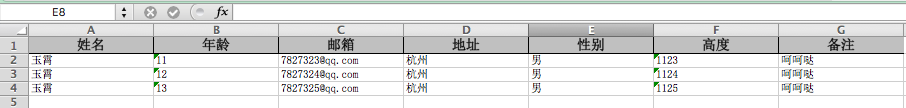
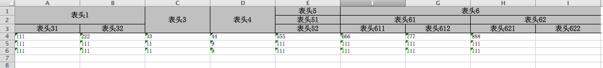
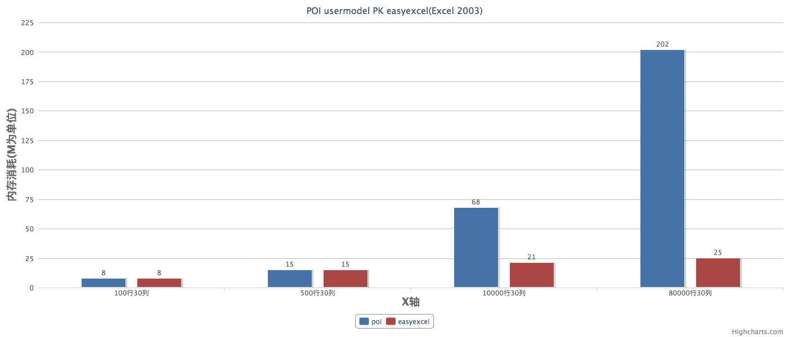
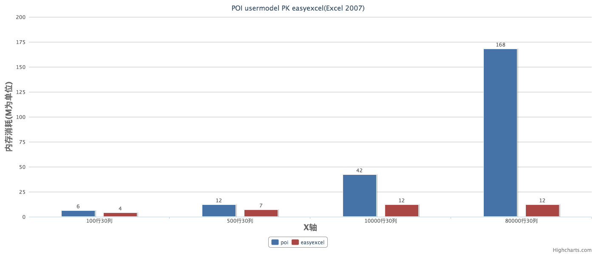
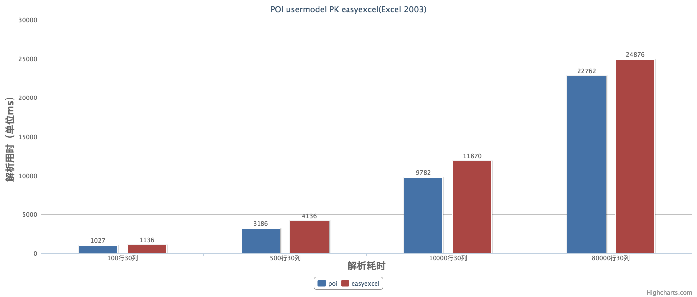
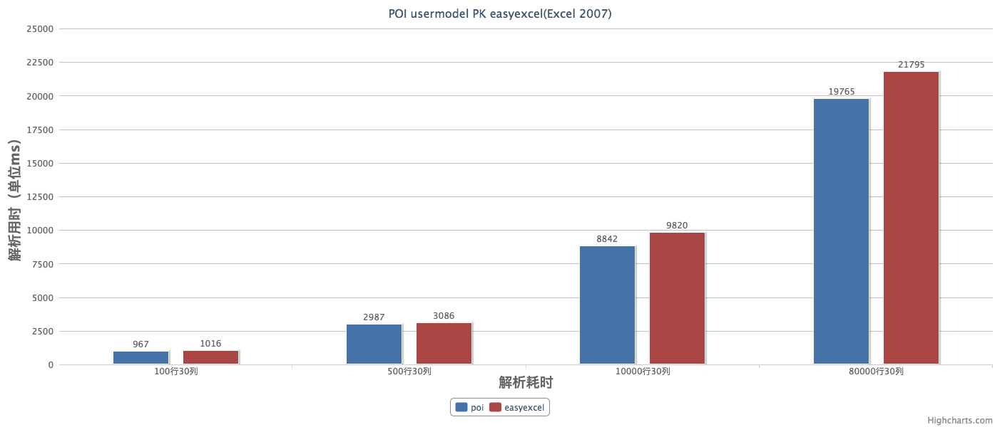

| 创建时间： | 2019/4/26 9:44 |
| 来源： | https://github.com/alibaba/easyexcel/blob/master/quickstart.md |
使用前最好咨询下最新版，或者到mvn仓库搜索先easyexcel的最新版
<dependency>
<groupId>com.alibaba</groupId>
<artifactId>easyexcel</artifactId>
<version>1.0.0-RELEASE</version>
</dependency>
使用easyexcel解析03、07版本的Excel只是ExcelTypeEnum不同，其他使用完全相同，使用者无需知道底层解析的差异。
读excel代码示例如下：
@Test
public void testExcel2003NoModel() {
InputStream inputStream = getInputStream("loan1.xls");
try {
// 解析每行结果在listener中处理
ExcelListener listener = new ExcelListener();
ExcelReader excelReader = new ExcelReader(inputStream, ExcelTypeEnum.XLS, null, listener);
excelReader.read();
} catch (Exception e) {
} finally {
try {
inputStream.close();
} catch (IOException e) {
e.printStackTrace();
}
}
}
ExcelListener示例代码如下：
/* 解析监听器，
* 每解析一行会回调invoke()方法。
* 整个excel解析结束会执行doAfterAllAnalysed()方法
*
* 下面只是我写的一个样例而已，可以根据自己的逻辑修改该类。
* @author jipengfei
* @date 2017/03/14
*/
public class ExcelListener extends AnalysisEventListener {
//自定义用于暂时存储data。
//可以通过实例获取该值
private List<Object> datas = new ArrayList<Object>();
public void invoke(Object object, AnalysisContext context) {
System.out.println("当前行："+context.getCurrentRowNum());
System.out.println(object);
datas.add(object);//数据存储到list，供批量处理，或后续自己业务逻辑处理。
doSomething(object);//根据自己业务做处理
}
private void doSomething(Object object) {
//1、入库调用接口
}
public void doAfterAllAnalysed(AnalysisContext context) {
// datas.clear();//解析结束销毁不用的资源
}
public List<Object> getDatas() {
return datas;
}
public void setDatas(List<Object> datas) {
this.datas = datas;
}
}
java模型写法如下：
public class LoanInfo extends BaseRowModel {
@ExcelProperty(index = 0)
private String bankLoanId;
@ExcelProperty(index = 1)
private Long customerId;
@ExcelProperty(index = 2,format = "yyyy/MM/dd")
private Date loanDate;
@ExcelProperty(index = 3)
private BigDecimal quota;
@ExcelProperty(index = 4)
private String bankInterestRate;
@ExcelProperty(index = 5)
private Integer loanTerm;
@ExcelProperty(index = 6,format = "yyyy/MM/dd")
private Date loanEndDate;
@ExcelProperty(index = 7)
private BigDecimal interestPerMonth;
@ExcelProperty(value = {"一级表头","二级表头"})
private BigDecimal sax;
}
@ExcelProperty(index = 3)数字代表该字段与excel对应列号做映射，也可以采用 @ExcelProperty(value = {"一级表头","二级表头"})用于解决不确切知道excel第几列和该字段映射，位置不固定，但表头的内容知道的情况。
@Test
public void testExcel2003WithReflectModel() {
InputStream inputStream = getInputStream("loan1.xls");
try {
// 解析每行结果在listener中处理
AnalysisEventListener listener = new ExcelListener();
ExcelReader excelReader = new ExcelReader(inputStream, ExcelTypeEnum.XLS, null, listener);
excelReader.read(new Sheet(1, 2, LoanInfo.class));
} catch (Exception e) {
} finally {
try {
inputStream.close();
} catch (IOException e) {
e.printStackTrace();
}
}
}
带模型解析与不带模型解析主要在构造new Sheet(1, 2, LoanInfo.class)时候包含class。Class需要继承BaseRowModel暂时BaseRowModel没有任何内容，后面升级可能会增加一些默认的数据。
OutputStream out = new FileOutputStream("/Users/jipengfei/77.xlsx");
try {
ExcelWriter writer = new ExcelWriter(out, ExcelTypeEnum.XLSX,false);
//写第一个sheet, sheet1 数据全是List<String> 无模型映射关系
Sheet sheet1 = new Sheet(1, 0);
sheet1.setSheetName("第一个sheet");
writer.write(getListString(), sheet1);
writer.finish();
} catch (Exception e) {
e.printStackTrace();
} finally {
try {
out.close();
} catch (IOException e) {
e.printStackTrace();
}
}
生成Excel格式如下图 
模型写法如下：
public class ExcelPropertyIndexModel extends BaseRowModel {
@ExcelProperty(value = "姓名" ,index = 0)
private String name;
@ExcelProperty(value = "年龄",index = 1)
private String age;
@ExcelProperty(value = "邮箱",index = 2)
private String email;
@ExcelProperty(value = "地址",index = 3)
private String address;
@ExcelProperty(value = "性别",index = 4)
private String sax;
@ExcelProperty(value = "高度",index = 5)
private String heigh;
@ExcelProperty(value = "备注",index = 6)
private String last;
}
@ExcelProperty(value = "姓名",index = 0) value是表头数据，默认会写在excel的表头位置，index代表第几列。
@Test
public void test1() throws FileNotFoundException {
OutputStream out = new FileOutputStream("/Users/jipengfei/78.xlsx");
try {
ExcelWriter writer = new ExcelWriter(out, ExcelTypeEnum.XLSX);
//写第一个sheet, sheet1 数据全是List<String> 无模型映射关系
Sheet sheet1 = new Sheet(1, 0,ExcelPropertyIndexModel.class);
writer.write(getData(), sheet1);
writer.finish();
} catch (Exception e) {
e.printStackTrace();
} finally {
try {
out.close();
} catch (IOException e) {
e.printStackTrace();
}
}
}
生成Excel格式如下图：  java模型写法如下：
public class MultiLineHeadExcelModel extends BaseRowModel {
@ExcelProperty(value = {"表头1","表头1","表头31"},index = 0)
private String p1;
@ExcelProperty(value = {"表头1","表头1","表头32"},index = 1)
private String p2;
@ExcelProperty(value = {"表头3","表头3","表头3"},index = 2)
private int p3;
@ExcelProperty(value = {"表头4","表头4","表头4"},index = 3)
private long p4;
@ExcelProperty(value = {"表头5","表头51","表头52"},index = 4)
private String p5;
@ExcelProperty(value = {"表头6","表头61","表头611"},index = 5)
private String p6;
@ExcelProperty(value = {"表头6","表头61","表头612"},index = 6)
private String p7;
@ExcelProperty(value = {"表头6","表头62","表头621"},index = 7)
private String p8;
@ExcelProperty(value = {"表头6","表头62","表头622"},index = 8)
private String p9;
}
写Excel写法同上，只需将ExcelPropertyIndexModel.class改为MultiLineHeadExcelModel.class
@Test
public void test1() throws FileNotFoundException {
OutputStream out = new FileOutputStream("/Users/jipengfei/77.xlsx");
try {
ExcelWriter writer = new ExcelWriter(out, ExcelTypeEnum.XLSX,false);
//写第一个sheet, sheet1 数据全是List<String> 无模型映射关系
Sheet sheet1 = new Sheet(1, 0);
sheet1.setSheetName("第一个sheet");
writer.write(getListString(), sheet1);
//写第二个sheet sheet2 模型上打有表头的注解，合并单元格
Sheet sheet2 = new Sheet(2, 3, MultiLineHeadExcelModel.class, "第二个sheet", null);
sheet2.setTableStyle(getTableStyle1());
writer.write(getModeldatas(), sheet2);
//写sheet3 模型上没有注解，表头数据动态传入
List<List<String>> head = new ArrayList<List<String>>();
List<String> headCoulumn1 = new ArrayList<String>();
List<String> headCoulumn2 = new ArrayList<String>();
List<String> headCoulumn3 = new ArrayList<String>();
headCoulumn1.add("第一列");
headCoulumn2.add("第二列");
headCoulumn3.add("第三列");
head.add(headCoulumn1);
head.add(headCoulumn2);
head.add(headCoulumn3);
Sheet sheet3 = new Sheet(3, 1, NoAnnModel.class, "第三个sheet", head);
writer.write(getNoAnnModels(), sheet3);
writer.finish();
} catch (Exception e) {
e.printStackTrace();
} finally {
try {
out.close();
} catch (IOException e) {
e.printStackTrace();
}
}
}
@Test
public void test2() throws FileNotFoundException {
OutputStream out = new FileOutputStream("/Users/jipengfei/77.xlsx");
try {
ExcelWriter writer = new ExcelWriter(out, ExcelTypeEnum.XLSX,false);
//写sheet1 数据全是List<String> 无模型映射关系
Sheet sheet1 = new Sheet(1, 0);
sheet1.setSheetName("第一个sheet");
Table table1 = new Table(1);
writer.write(getListString(), sheet1, table1);
writer.write(getListString(), sheet1, table1);
//写sheet2 模型上打有表头的注解
Table table2 = new Table(2);
table2.setTableStyle(getTableStyle1());
table2.setClazz(MultiLineHeadExcelModel.class);
writer.write(getModeldatas(), sheet1, table2);
//写sheet3 模型上没有注解，表头数据动态传入,此情况下模型field顺序与excel现实顺序一致
List<List<String>> head = new ArrayList<List<String>>();
List<String> headCoulumn1 = new ArrayList<String>();
List<String> headCoulumn2 = new ArrayList<String>();
List<String> headCoulumn3 = new ArrayList<String>();
headCoulumn1.add("第一列");
headCoulumn2.add("第二列");
headCoulumn3.add("第三列");
head.add(headCoulumn1);
head.add(headCoulumn2);
head.add(headCoulumn3);
Table table3 = new Table(3);
table3.setHead(head);
table3.setClazz(NoAnnModel.class);
table3.setTableStyle(getTableStyle2());
writer.write(getNoAnnModels(), sheet1, table3);
writer.write(getNoAnnModels(), sheet1, table3);
writer.finish();
} catch (Exception e) {
e.printStackTrace();
} finally {
try {
out.close();
} catch (IOException e) {
e.printStackTrace();
}
}
}
    从上面的性能测试可以看出easyexcel在解析耗时上比poiuserModel模式弱了一些。主要原因是我内部采用了反射做模型字段映射，中间我也加了cache，但感觉这点差距可以接受的。但在内存消耗上差别就比较明显了，easyexcel在后面文件再增大，内存消耗几乎不会增加了。但poi userModel就不一样了，简直就要爆掉了。想想一个excel解析200M，同时有20个人再用估计一台机器就挂了。